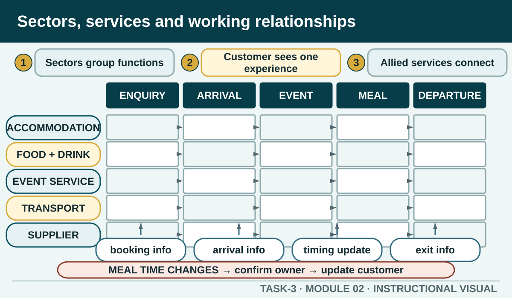

Prior learning
Recall the previous lesson and bring forward one question or completed learning artefact.
Task 3 · Lesson 2 of 6
Map the functions and characteristics of hospitality sectors, allied industries and suppliers, then trace how information moves across a customer experience.
Prior learning
Recall the previous lesson and bring forward one question or completed learning artefact.
Success criteria
Learning boundary
This lesson supports preparation and formative practice. The current authorised package and trainer/assessor control formal products, observations, dates and submission.

Industry sectors help organise businesses with related main functions. Accommodation businesses provide places to stay and connected guest services. Food and beverage businesses prepare, sell or serve food and drinks in varied settings. Functions, venues, clubs and visitor services can overlap with these areas, while each business still has its own service style, customers, size and operating context.
Do not assume that every business within a sector offers the same products or uses the same roles. Describe the main function, the services offered, the customer interaction and the work areas involved. This makes the map useful for a worker and avoids turning a sector heading into a stereotype.
A hospitality experience often crosses several work areas. A booking may create information for reception, a function team, kitchen, beverage service, accounts and cleaning. Each area performs a different function, yet the customer judges the combined outcome. Accuracy at the handover matters as much as the quality of the individual task.
Mapping the experience from the customer's point of view helps reveal dependencies. The map should show what information begins each step, who uses it, what product or service is produced and what must be handed over next. It should also show where a change needs to travel so one department does not work from outdated information.
Hospitality connects with industries and services beyond the venue. Examples can include tourism and travel, transport, entertainment, events, retail, agriculture and food production, technology, training, cleaning, maintenance and waste services. The relationship matters when another organisation supplies a product, information, infrastructure or customer connection.
The strongest explanation names the function of the relationship. A transport provider may affect arrival timing; a technology provider may support reservations; a local producer may affect product availability and provenance information. The purpose is not to create the longest list but to show how another industry changes what the hospitality business can promise or deliver.
Suppliers contribute more than stock. They can provide product descriptions, availability, delivery information, equipment support, maintenance, training or updates. Hospitality workers need to know which supplier information affects their own duties and which decisions must be referred to purchasing, management or another authorised role.
A useful relationship record identifies the promised input, the information needed, the receiving role, the check at handover and the response when the input differs from expectation. It does not publish a private contract, price, account number or business contact. Use a fictional or teacher-supplied scenario for practice.
Information can fail even when it is technically sent. A useful handover states what changed, which customer or task is affected using privacy-safe identifiers, who owns the next action and how receipt is confirmed. The receiving role should be able to repeat the key detail or update the shared system.
Closed-loop communication is especially important where sectors or organisations use different systems and vocabulary. The sender checks that the message reached the correct function, while the receiver confirms meaning and next action. If the worker cannot resolve a conflict between sources, the handover includes the uncertainty and the authorised clarification route.
A national industry profile can identify broad categories, but it cannot establish the exact businesses, services, relationships or workforce conditions in a local area. A local or regional map needs current evidence such as official directories, regional tourism information, council information, business websites or teacher-authorised observations, chosen to match the question.
Record the boundary of the map and the date checked. If a service appears in one source but cannot be confirmed, label it unverified rather than filling the gap. Do not publish private workplace knowledge or identify a placement business without permission. A fictional map can still demonstrate the relationship reasoning.
Formative practice
Each option explains the workplace consequence. These responses save on this device.
Written application
Describe functions and information, not just business names. Use fictional identifiers and explain why each connection matters.
Apply and keep evidence
Connect hospitality settings, their primary functions and the suppliers or related sectors that support them.
Use the check result, activity record and written response as formative learning evidence only. Formal evidence remains controlled by the current package and trainer/assessor.
Authorised source note: Sector characteristics, functions, local and regional features, allied industries, supplier relationships and cross-sector work are explicit knowledge domains. Examples remain illustrative and do not assert a current local business map. Source references: TAS-2026-2027, TEACHER-T3-RESOURCE, SITE-T3-V2, TGA-SITHIND006-AR, GOV-JSA-INDUSTRY, GOV-TRA-ANALYSIS.